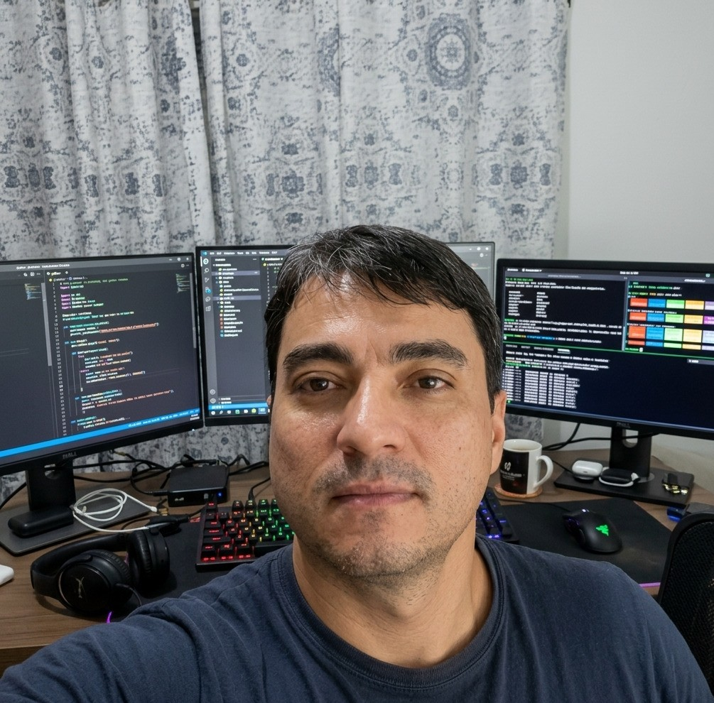

Bem vindo
ao portfólio de
Thiago Collaço Kioshima
Powered by:




Analista de Dados em Saúde & Estudante de Ciência de Dados
Olá! Meu nome é Thiago Collaco Kioshima. Tenho 44 anos, sou natural e residente em Curitiba, Paraná. Atualmente, atuo como Analista de Dados na área da saúde na Neo Concept Consultórios Médicos e Odontológicos, em Curitiba.
Com uma trajetória consolidada no setor de turismo e uma transição para o universo da tecnologia, curso Ciência de Dados na Uninter. Acredito que a tecnologia e a análise de dados são ferramentas poderosas para transformar processos e resolver problemas complexos.
Meu objetivo é unir minha bagagem profissional à capacidade de criar soluções digitais eficientes, sempre com foco em inovação, organização e resultados.
Meus hobbies são musculação, pescaria, curtir a natureza, viajar e passar tempo com minha família e amigos. Sou apaixonado por tecnologia, inovação e por aprender coisas novas.